MERIDIUS / SQUAD LIKENESSES / FACIAL FEATURES / 23 OCT 2026
Facial features
Every head from the footmen, crossbowmen and spearmen concept sheets, one image each, as the reference for per-soldier heads. Each squad member has his own hair, beard and face. The three units repeat the same five or six types, so one shared head library can cover all three. Click an image to see it full size and download it.
Footmen
From projects/meridius/references/characters/Footmen.png: six soldiers, back rank left to right, then front rank.
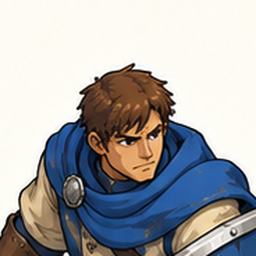

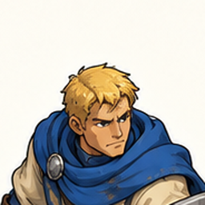

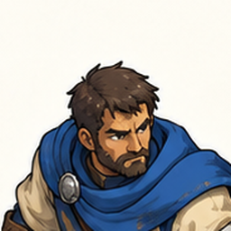

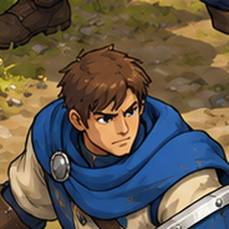

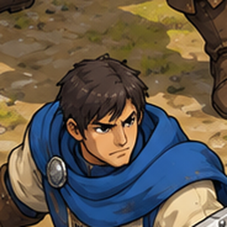

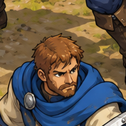

Crossbowmen
From projects/meridius/references/characters/Crossbowmen.png: six soldiers, back rank left to right, then front rank.
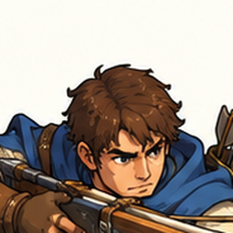

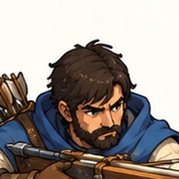

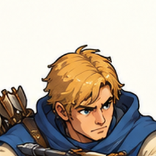

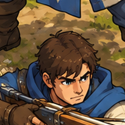

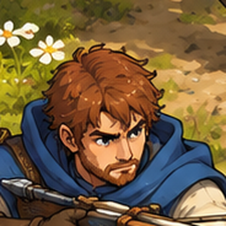

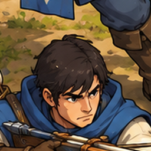

Spearmen
From projects/meridius/references/characters/Pikemen.png. Five heads are visible; the sixth spearman is hidden behind his squad.
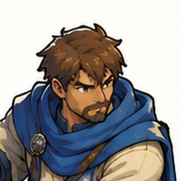

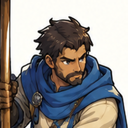

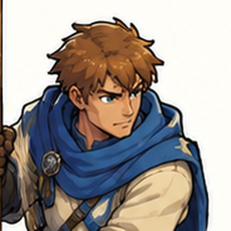

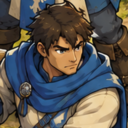

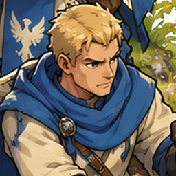

Shared head types
The three units use the same handful of looks. Six shared heads would cover every soldier above. Each squad then picks its six from the library, with a hair-colour or skin-tone tint where two would otherwise match.
| Head type | Footmen | Crossbowmen | Spearmen |
|---|---|---|---|
| Young, brown hair, clean-shaven | 1, 4 | 1, 4 | 4 |
| Blond, clean-shaven | 2 | 3 | 5 |
| Black hair, clean-shaven | 5 | 6 | none |
| Veteran, dark full beard | 3 | 2 | 2 |
| Auburn or ginger, short beard | 6 | 5 | none |
| Brown, short beard | none | none | 1 |
| Chestnut, spiky, clean-shaven | none | none | 3 |
Notes
- At battle zoom a soldier is about 80 px tall and his face 8–10 px. Hair shape, beard, hair colour and skin tone read there. Eyes and noses show only in portraits and close-ups.
- For the 3D figures, each type becomes one head fixed to the shared rig's head bone, with the joint hidden under the scarf. The body, weapons and animations stay shared.
- The game already gives each soldier in a squad a look number (0–5), and each soldier record keeps a portrait and a variant, so a head can follow a soldier from roster to battle.
- The crop centres are in
facial-features/head_crops.json(pixel positions in each sheet), so the heads can be cut again at another size.